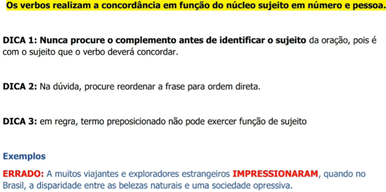
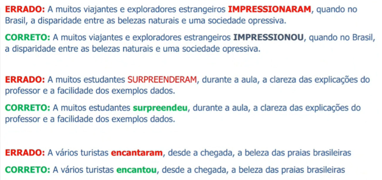
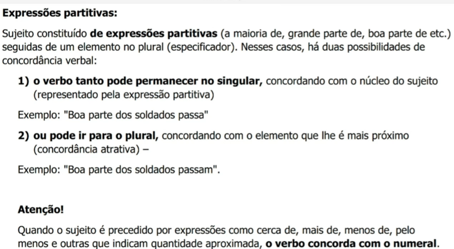
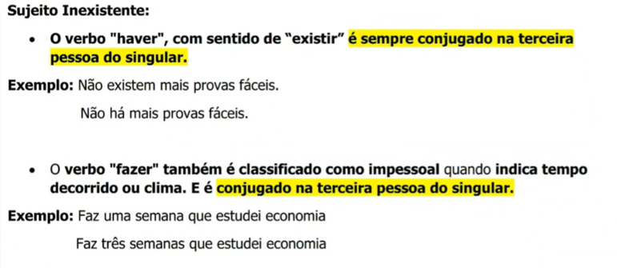
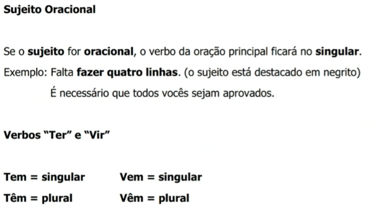
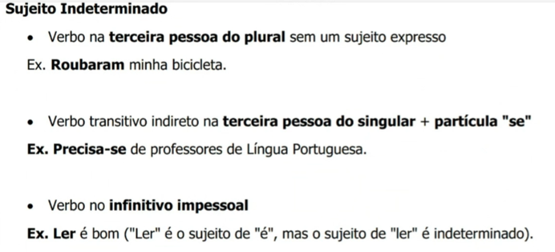

Concordância Verbal e Nominal
Conceito Geral
A concordância garante a harmonia das palavras. A verbal faz o verbo concordar com o sujeito em número e pessoa. A nominal faz os modificadores (artigos, adjetivos, pronomes, numerais) flexionarem-se com o substantivo.
Concordância Verbal: Regra Geral e Armadilhas
O verbo concorda com o núcleo do sujeito.
1. Nunca procure o complemento antes de achar o sujeito.
2. Na dúvida, reordene a frase para a ordem direta (Sujeito + Verbo).
3. Em regra, termo preposicionado não pode ser sujeito.
❌ Errado: "A muitos viajantes e exploradores estrangeiros impressionaram, quando no Brasil, a disparidade entre as belezas..."
Correto: "A muitos viajantes e exploradores estrangeiros impressionou, quando no Brasil, a disparidade..."
👉 Por que? "A muitos viajantes" tem preposição, não é o sujeito. O sujeito real é "a disparidade" (singular).
❌ Errado: "A muitos estudantes surpreenderam, durante a aula, a clareza das explicações..."
Correto: "A muitos estudantes surpreendeu, durante a aula, a clareza das explicações..."


Casos Especiais Cruciais (O Guia de Sobrevivência)
1. Expressões Partitivas (A maioria de, grande parte de...)
Se seguidas de elemento no plural, permitem dupla concordância:
🔹 Exemplo: "Boa parte dos soldados passa" (Concorda com o núcleo "parte").
🔹 Exemplo: "Boa parte dos soldados passam" (Concorda com o atrativo "soldados").

2. Porcentagens
📊 Sem Artigo: Pode concordar com o número ou com o substantivo.
👉 Exemplo: "Somente 40% da população concordaram / concordou..."
📊 Com Artigo: Concordância obrigatória com o numeral.
👉 Exemplo Difícil: "Os 30% da população não concordam..."

3. Sujeito Inexistente (Verbos Impessoais)
🛑 Ficam obrigatoriamente na 3ª pessoa do singular.
- Haver (Significado de Existir): "Não há mais provas fáceis" (e não "hão").
- Fazer (Tempo decorrido ou clima): "Faz três semanas que estudei economia" (jamais "fazem").

4. Sujeito Oracional e Verbos Ter/Vir
Se o sujeito for uma oração, o verbo principal fica no singular.
👉 Exemplo: "Falta fazer quatro linhas".
• Ele tem (Singular) / Eles têm (Plural)
• Ele vem (Singular) / Eles vêm (Plural)

